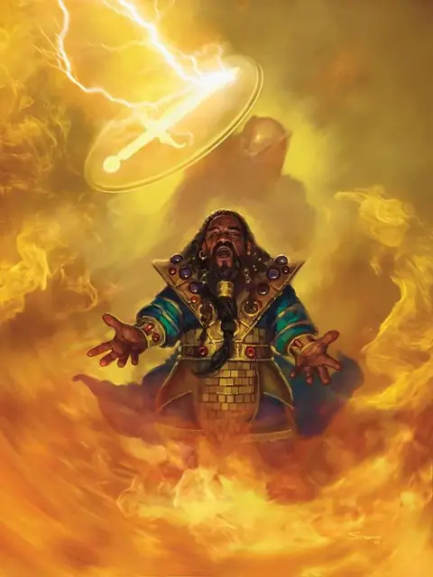

Страж веры
Guardian of Faith
4 уровень, Вызов

Время сотворения 1 действие
Дистанция 30 футов
Компоненты В
Длительность 8 часов
Классы Жрец
Подклассы домен жизни (жрец), домен света (жрец), небожитель (колдун), клятва преданности (паладин), клятва короны (паладин)
В выбранной и видимой вами свободной клетке в пределах дистанции появляется и начинает парить Большой призрачный страж. Страж занимает своё пространство, и его контуры плохо видны за исключением сверкающего меча и щита, украшенного символом вашего божества.
Все существа, враждебные вам, перемещающиеся впервые за ход в пространство, находящееся в пределах 10 футов от стража, должны преуспеть в спасброске Ловкости. При провале такое существо получает урон излучением 20, или половину этого урона при успехе. Страж исчезает, когда причинит суммарно 60 урона.